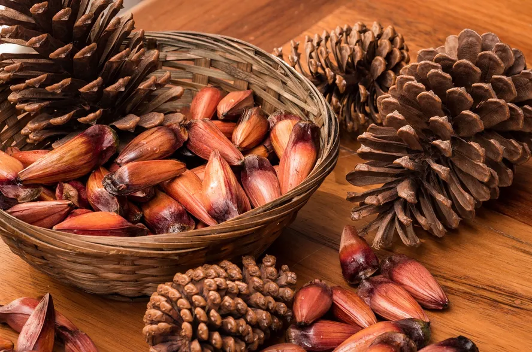

Pinhão

Breve historia do pinhão
O hábito de comer pinhão foi herdado de algumas tribos indígenas,
Os pinhões também servem de alimento para muitos animais da região,
Logo, além de importante na alimentação.
A fartura de pinhões também significava uma boa caça para os índios
Modos de consumir o pinhão
Cozido, assado ou simplesmente usado como ingrediente em pratos típicos.
Não importa como o pinhão é consumido,o importante é que seu sabor conquista paladares,
e nos leva a épocas remotas da nossa história, no passado fazia parte da alimentação dos indigenas.